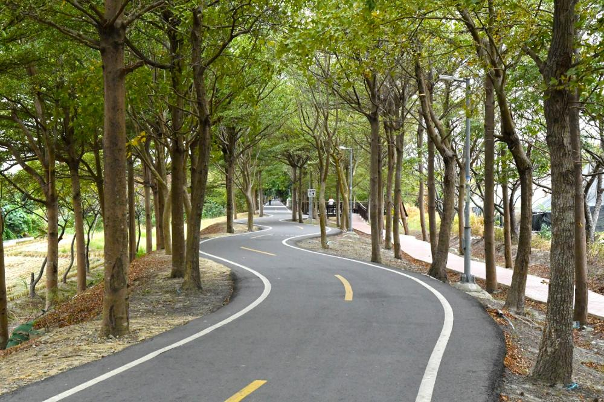
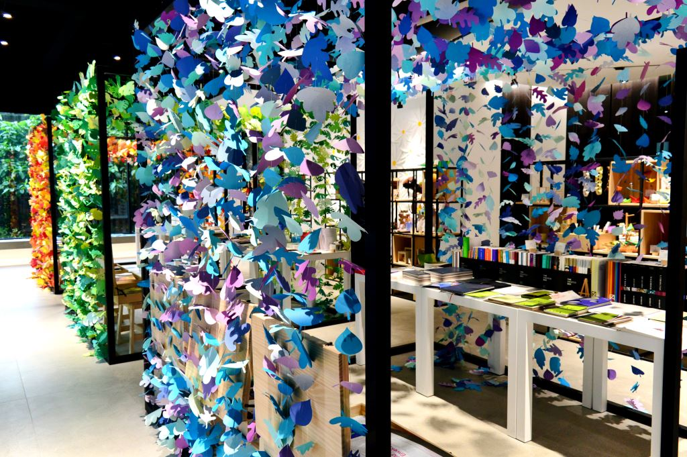
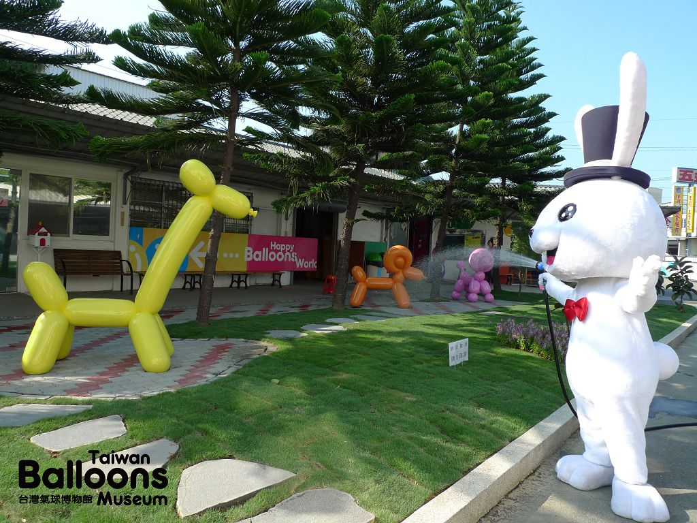

Traffic
Information
交通資訊
交通資訊
Here→
大眾運輸-火車
於豐原火車站下車→轉搭客運(185、186號)→至福隆新村站下車→接著步行約5分鐘即可到達。
自行駕車
國道一號→168公里處(豐原/神岡)交流道→往神岡方向→ 中山路627號(神岡工業高級中等學校)後右轉可抵。 Google Maps >周邊景點

潭雅神綠園道
綠意唯美的自行車道，被森林給包圍著，騎鐵馬運動健身，
還能欣賞綠林之美讓身心的疲憊，也隨之淨化了。

紙博館
以「紙」為主題的博物館，免門票就可以參觀
，裡頭展示了很多紙藝品、特殊紙材，還有利用紙元素點綴的展場空間。

氣球博物館
以氣球為主題的氣球觀光工廠，結合文化創意與觀光的景點
，讓來到這裡的訪客們體驗到氣球DIY樂趣。
Back
to top